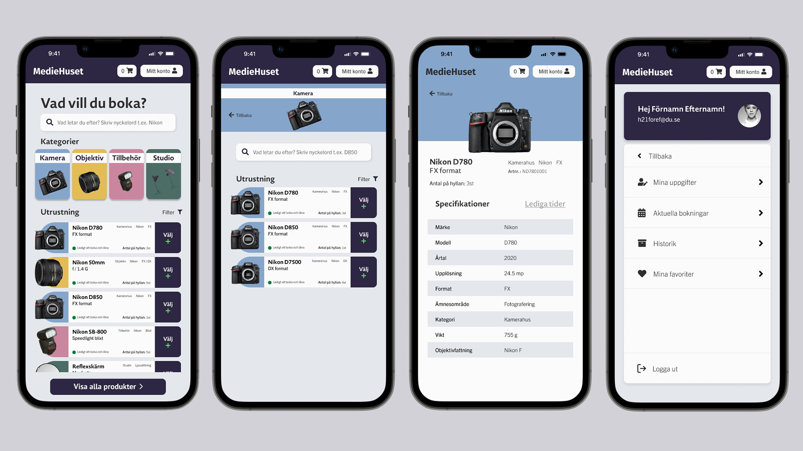

Prototyp - Bokningssystem
Roll: allt
Programvara: figma
Slutprodukt: prototyp av bokningssystem
Översikt
För ett projekt på Högskolan Dalarna skulle ett äldre bokningssystem förnyas och förbättras. Via systemet kunde studenter boka mediautrustning som t.ex. systemkameror och studioblixtar. För att boka var man tvungen att ha ett konto och det kunde man skaffa om man studerade på ett specifikt program. Genom att logga in på sitt konto kunde man kolla bl.a. historik, pågående bokningar och kommande bokningar.
Varför behövdes en ny?
Det äldre systemet gjorde visserligen sitt jobb eftersom man kunde boka utrustning men den har troligen hängt med sedan 90-talet utan att uppdateras och det har sina konsekvenser. Den hade milt sagt väldigt dålig UX, under ett steg krävdes exempelvis mobilnummer men det fanns ingen information om varför det behövdes och under ett annat steg fanns det ingenting att välja eller göra för att det valdes redan i steget före. Systemets UI var ännu sämre. Med fokus på slutanvändarna kunde redesignen börja
Fokus på slutanvändarna
Genom intervjuer med studenter i början av arbetet kunde jag tydliggöra vad som önskades, inte önskades och det som prioriterades av bokningssystemet. När, hur och i vilka situationer systemet kom till användning framkom också vilket var mycket användbar information till det fortsatta arbetet.
Eftersom många idag använder mobilen och att man ska designa och koda för mobile first så valdes just mobilformat till prototypen. Det var även en bra utmaning att få all nödvändig information på en mindre skärm. Skisser över olika sidor och sektioner av systemet togs fram så det fanns en bra grund att ha när arbetet flyttades över till Figma.
Längre fram gjordes även en card sorting via UXtweak för att samla in information specifikt om utrustningen och hur den skulle delas upp i olika kategorier. Det gav bra information om hur utrustningen skulle delas upp i systemet för att en möjlig student lätt skulle kunna hitta en önskad produkt att boka.
Resultat
Slutprodukten blev en interaktiv prototyp där användaren först ska logga in alternativ skapa ett konto, sen kan önskade produkter sökas fram och bokas. En sida över användarens konto skapades också där de kan se deras information, aktuella bokningar och historik. En tydlig design och struktur skapades med fokus på och hänsyn till målgruppen och den informationen som framkom under intervjuerna och testerna.
Se prototypen här!